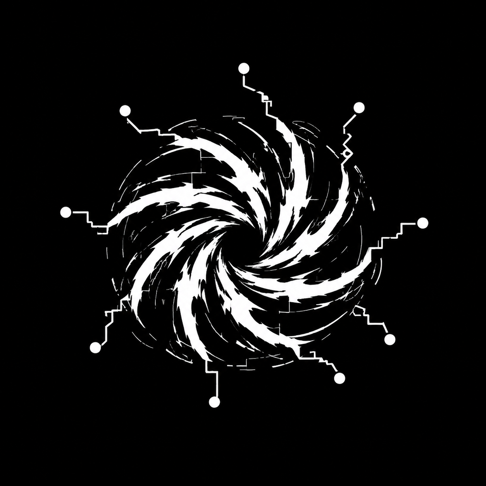

ESTABLISHING LINK

CG//0x1
SIGNAL ACTIVE
CRAFTED
GLITCHES
A LITTLE BIT OF EVERYTHING (AND ANYTHING).
ORG
github.com/crafted-glitches
PARTICLED
audio-reactive particle fields
DEPLOY-BAROMETER
should i deploy today? · on hardware